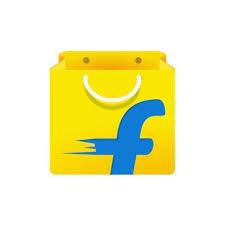

Hi, My Name is Subhodeep
and I am a passionate

Work Experience

Team Leader (2023-2024)
As an Operations Team Leader in Logistics and Delivery Management, I ensured smooth and
efficient hub operations by overseeing key processes such as opening, closing, and adhering to
operational standards.Beyond daily tasks, I took ownership of my team's motivation, addressing
grievances, reducing
attrition, and providing coaching and training to meet operational key performance indicators
(KPIs). I worked closely with the organization to adopt new policies and processes seamlessly
while maintaining zero stock variance at the hubs. My goal was always to ensure that operations
ran smoothly, customers were satisfied, and company objectives were consistently met.
Web Developer Intern (2024-Present)
As an Operations Team Leader in Logistics and Delivery Management, I ensured smooth and
efficient hub operations by overseeing key processes such as opening, closing, and adhering to
operational standards.Beyond daily tasks, I took ownership of my team's motivation, addressing
grievances, reducing
attrition, and providing coaching and training to meet operational key performance indicators
(KPIs). I worked closely with the organization to adopt new policies and processes seamlessly
while maintaining zero stock variance at the hubs. My goal was always to ensure that operations
ran smoothly, customers were satisfied, and company objectives were consistently met.